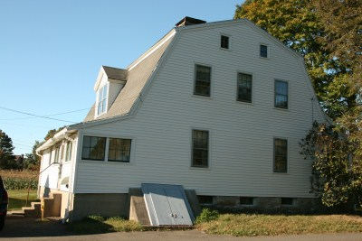
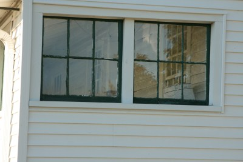

This article is the result of
my curiosity upon seeing the above inscription on one of the few
remaining tombstones in the Antlers Intersection Cemetery in the town
of Avoca. Who was this man? How did he, a Harvard graduate, come to be
buried in this spot in 1839? Were other members of his family buried
here? My research has provided some of the answers. The following is
from the Harvard University alumni archives:
Abner Smith, minister of the Great Hill Church in
Derby, CT., was born on January 26, 1744, & admitted
to college from Springfield. The fact that in
spite of his being twenty-two & the oldest member
of his class, he was placed half-way in the
order of seniority indicates that his father was
a man of distinction in the civil establishment but
he evades identification. Abner served as a
caretaker of buildings during vacations, held a
Hollis scholarship, & won a Hopkins Detur. For his
second degree he was prepared to argue that “It
Would Not Be Right For Men To Kill Animals For
Food Had Not Special Permission Be Given By The
Deity”. The next year, 1774, he was in Cambridge
as a Hopkins fellow. On December 21, 1787, he
was called to the church on Great Hill. Derby,
which offered him a salary of 70 pounds a year
& firewood. He was ordained there on May 24,
1787, & despite his small salary, he built a
substantial gambrel-roofed house on the most picturesque location on
Great Hill. Parson Smith was a man of no pretentiousness but a sincere,
intelligent & devoted minister. Charles Nichols (Yale 1812), who
lived with the Smiths for a time, in later years said of the Parson, “I
remember him as he used often to appear in our church & as I
sometimes heard him preach. His delivery was very moderate, his
voice nasal, his body short, his legs long & very crooked
& his whole aspect & manner unique”. In 1829 Smith went west
taking his family with him. We do not know their names because his
church records have not survived.
Abner Smith was married to Esther Bull (1758-1817), daughter
of Major Thomas & Elizabeth Curtis Bull of Woodbury, Ct. As far as
can be determined, they had three children. A son John (1791-1794)
& a daughter Elizabeth (1793-1794) lie buried with their mother in
the Great Hill Cemetery in Seymour, CT. Another daughter, also named
Elizabeth, was born in the late 1790s. She married Rev. Samuel
Tillotson Babbitt in 1821. The marriage was performed by her father who
was 78 years old at that time.

Located on the highest point of Great Hill the “substantial
gambrel-roofed house” which Rev. Smith built is pictured above as it
looks today. Front & rear porches have been added to the original
house. The following was found in Seymour
Past & Present by
Campbell, Sharpe & Bassett:
The corner closet in
the front north room served as the Reverend’s liquor cabinet, since it
was thought at the time that serving alcohol was a social necessity. It
is said that the Parson suffered a little because of this custom due to
the social generosity of his people, especially on those days when he
made a great many calls. Those visits to his scattered congregation he
made on horseback & was always able to return in the same manner
that he went.
Rev. Smith’s old house is now known as the Bomba house since,
for the past many years, three generations of Bombas have lived there.
When they learned of my interest in the original owner, they shared the
information that the original 12 over 12 panes of glass are still in
the house’s rear windows & that the 63 acres of Abner’s farm are
deed restricted to always remain agricultural which will help to
preserve the lovely old house with its view of Long Island Sound some
thirty miles away.

So why did Rev. Abram Smith end up in Steuben County? In 1829
Rev.
Babbitt, Abner’s son-inlaw, received a call to serve the churches in
the Bath (NY) Presbytery. Rev. Smith, having given up his pastorate due
to age & infirmity & apparently having no other family members
in the area, accompanied his daughter & son-in-law to Steuben
County. (Remember in the Harvard article it said he went “west”. West
must have meant Steuben County!) Rev. Babbitt served several area
churches belonging to the Presbytery from about 1830 to 1850 including
an eleven year pastorate (1836 to 1847) in the town of Pulteney.
Records show that in 1852 Rev. Samuel & Elizabeth & “their
large family” were living in Barry, IL.
So now we know why Rev. Abner Smith spent the last ten years of his
life in Steuben County. However, why he was buried in the town of Avoca
remains a mystery.